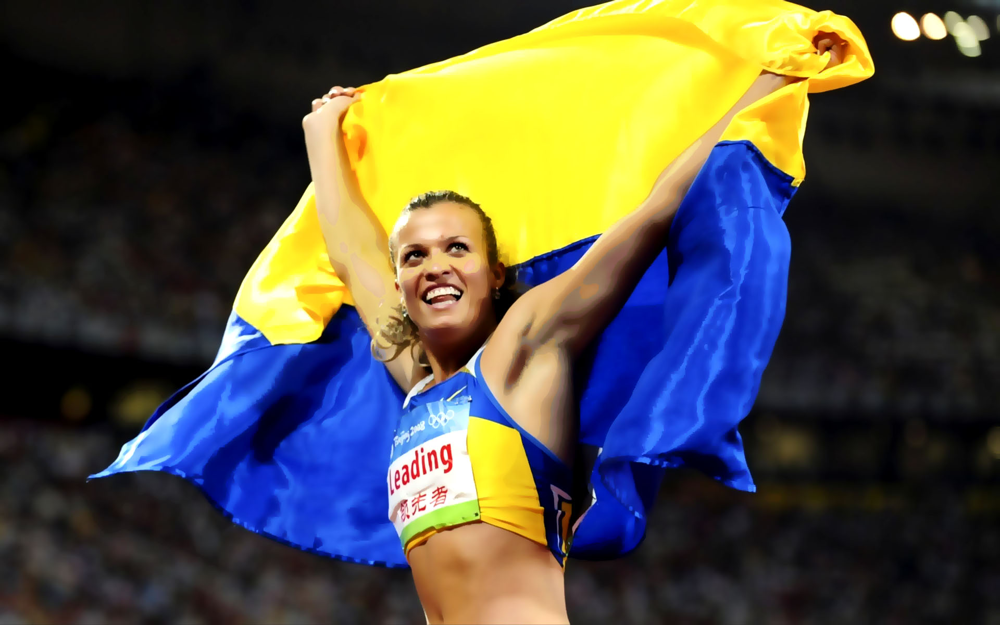

Спортивні досягнення Наталії Добринської:

- З 1991 року вихованка Вінницької СДЮСШОР з легкої атлетики
- В 13-річному віці виконала норматив кандидата у майстри спорту в п"ятиборстві
- В 14 років встановила рекорд України в 7-борстві
- 2000 р. - Чемпіонат України серед юніорів, 1 місце, семиборство
- 2003-2004 - 2005 - 2007 р. - Чемпіонат України, 1 місце, п"ятиборство
- 2004 р. - Олімпійські ігри 2004 , 8 місце
- 2004 р. - Чемпіонат світу, 2 місце, п"ятиборство
- 2005 р. - Чемпіонат Європи, 3 місце, п"ятиборство
- 2005 р. - Чемпіонат світу, 9 місце
- 2007 р. - Чемпіонат світу, 6 місце
- 2008 р. - Олімпійські ігри 2008 , 1 місце, семиборство
- 2009 р. - Чемпіонат світу, 4 місце
- 2010 р. - Чемпіонат світу, 2 місце
- 2010 р. - Чемпіонат Європи, 2 місце
- 2011 р. - Чемпіонат світу, 5 місце
- 2012 р. - Чемпіонат світу, 1 місце, п"ятиборство, національний рекорд.
